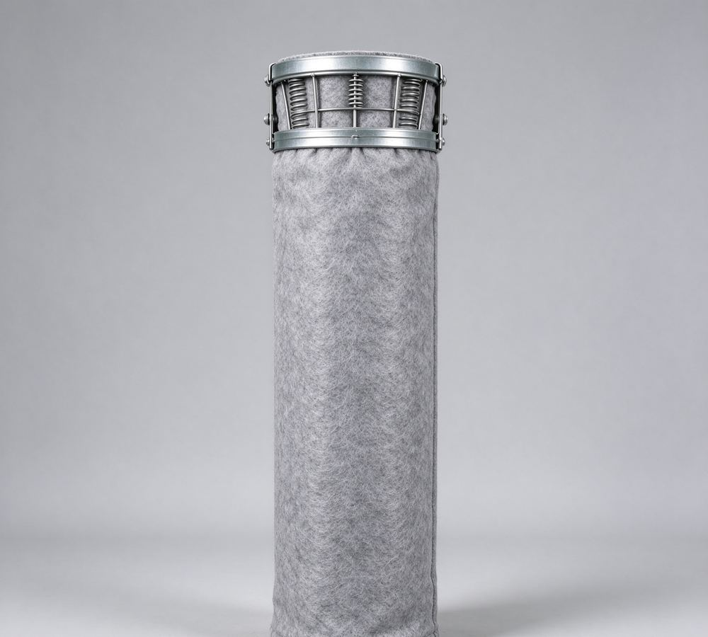
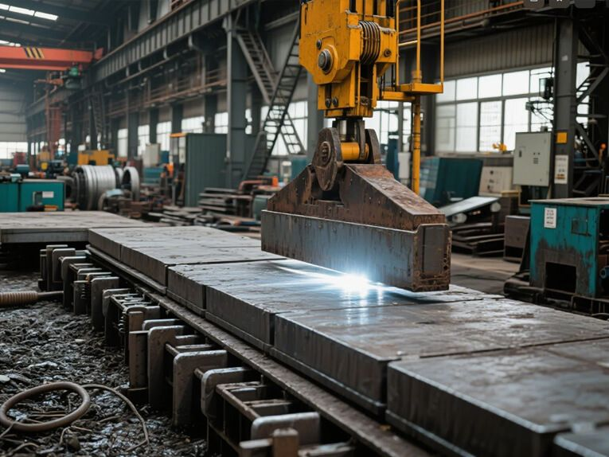
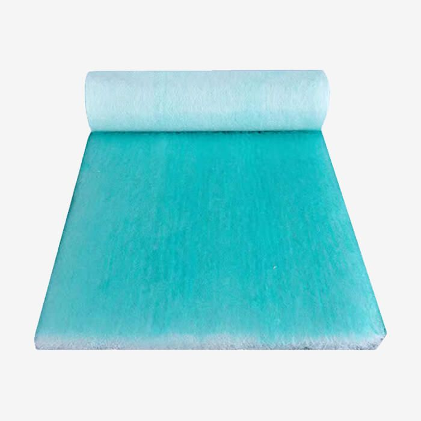
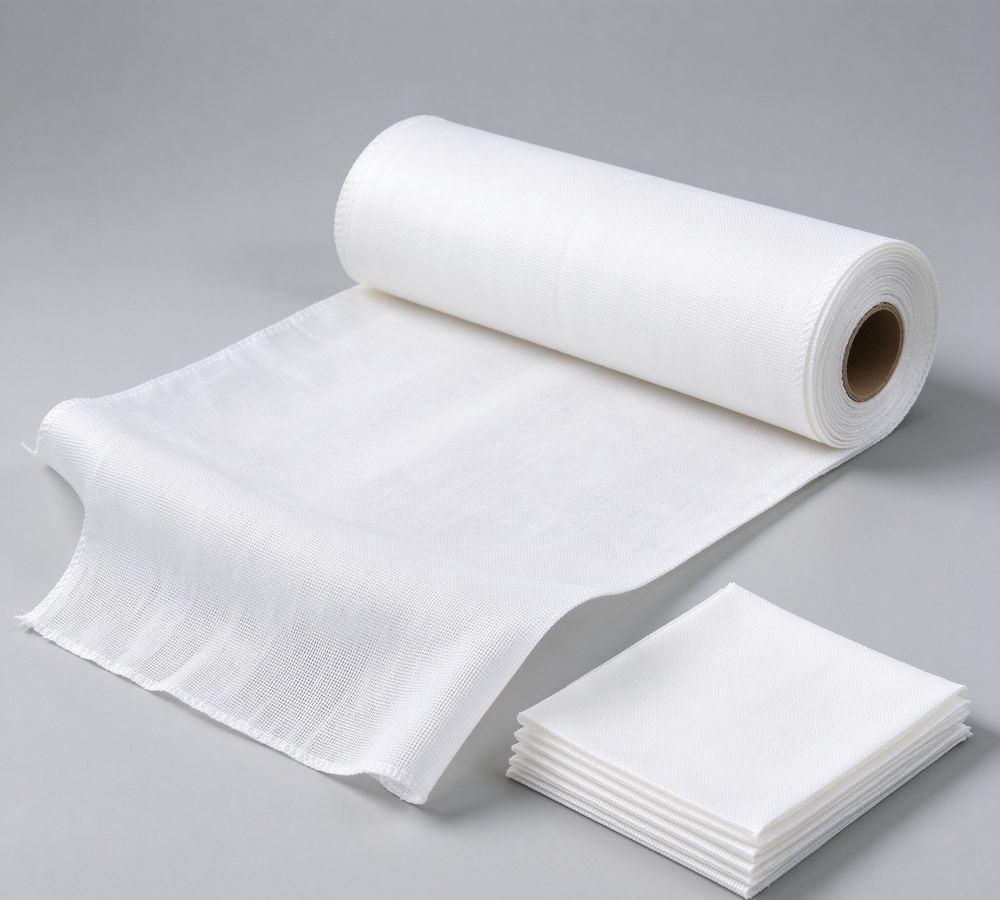
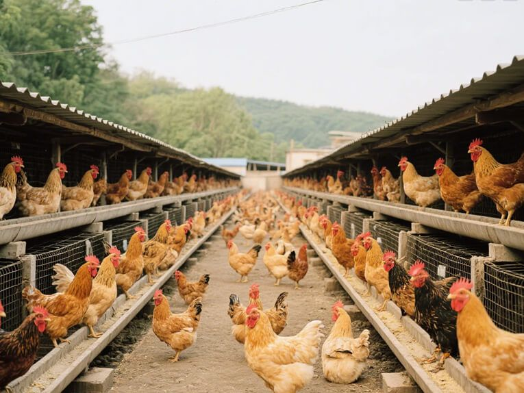
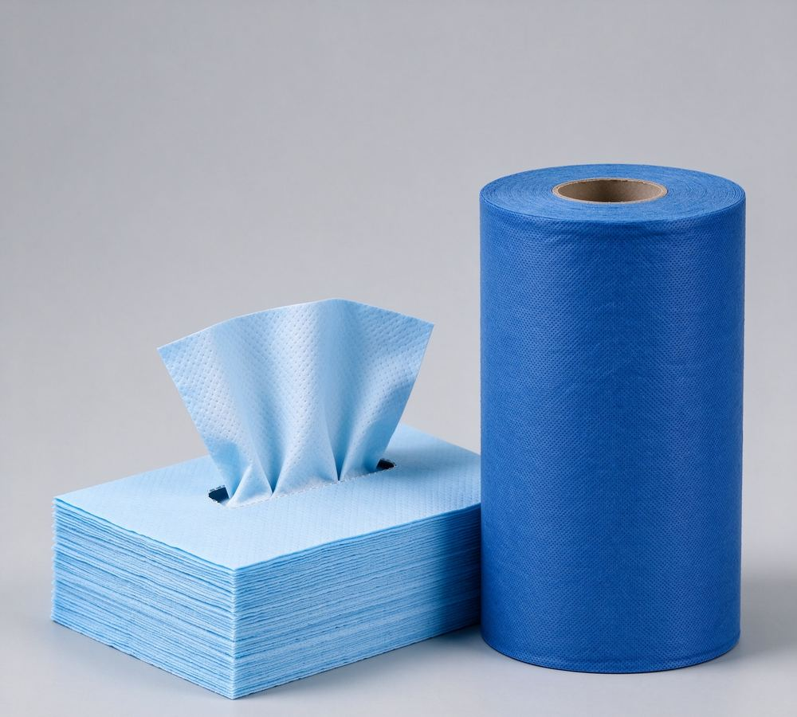

Industry Applications
Our filter media works in demanding environments — from cement plants to food production lines.
Our filter media works in demanding environments — from cement plants to food production lines.
Each industry puts different demands on filter media — temperature, particle size, food contact, fire safety. We match the product to the duty, not the other way round.
Cement plants run some of the harshest filtration duty in industry: high dust loads, abrasive powder and elevated temperatures. We supply dust collection filter bags for kilns, mills and silo vents, plus the air slide fabric, aeration pads and conveying hoses that keep powder moving through the plant.

Food-contact filtration demands certified materials and consistent cleanliness. Our tea bag meshes, coffee and liquid food filter papers, frying oil papers and milk filter bags are produced by mills experienced in food-contact export orders, with documentation available on request where applicable.

Grinding machines and machining centers depend on clean coolant. Our flat-bed filter cloths — needle-punched for high dirt holding, or woven polyester where chemical resistance matters — remove metal chips and fine particles so coolant recirculates clean and tool life improves.

From boiler-house dust collection to fluidized-bed aeration, power plants need media that survives heat and continuous duty. We supply high-temperature needle felts, fiberglass media and aeration components used in ash handling, silo venting and fluidizing systems.

Chemical processing and environmental equipment both rely on dependable liquid and air filtration. Polypropylene media handles aggressive chemistries; woven polyester stands up to process water duty; industrial wipers keep maintenance crews equipped for oil and solvent cleanup.

Agriculture uses nonwovens where nature is tough on materials: nursery mats must survive UV and moisture through a whole growing cycle, and milking operations need food-safe primary filtration that is quick to fit and replace.

Garment and printing workshops consume technical fabrics daily. Our embroidery tear-away backing tears cleanly without residue, and our screen printing canvas delivers high color saturation for UV and 3D printing work — both supplied in consistent roll widths.

Tell us the application and duty conditions — we will propose a suitable product and specification.